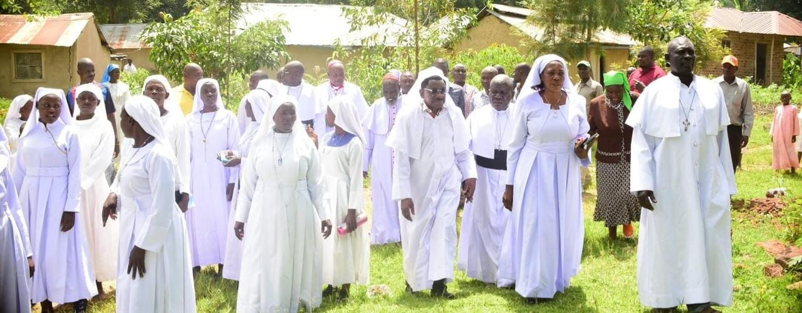
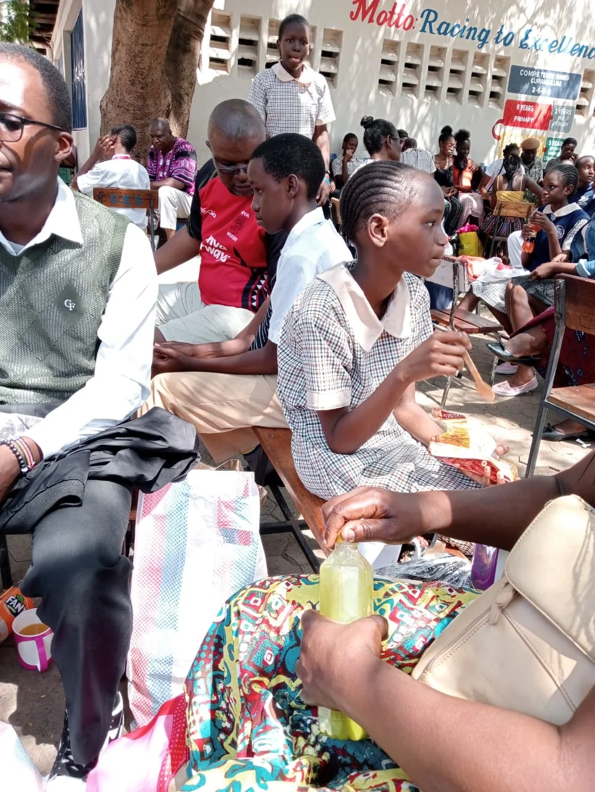
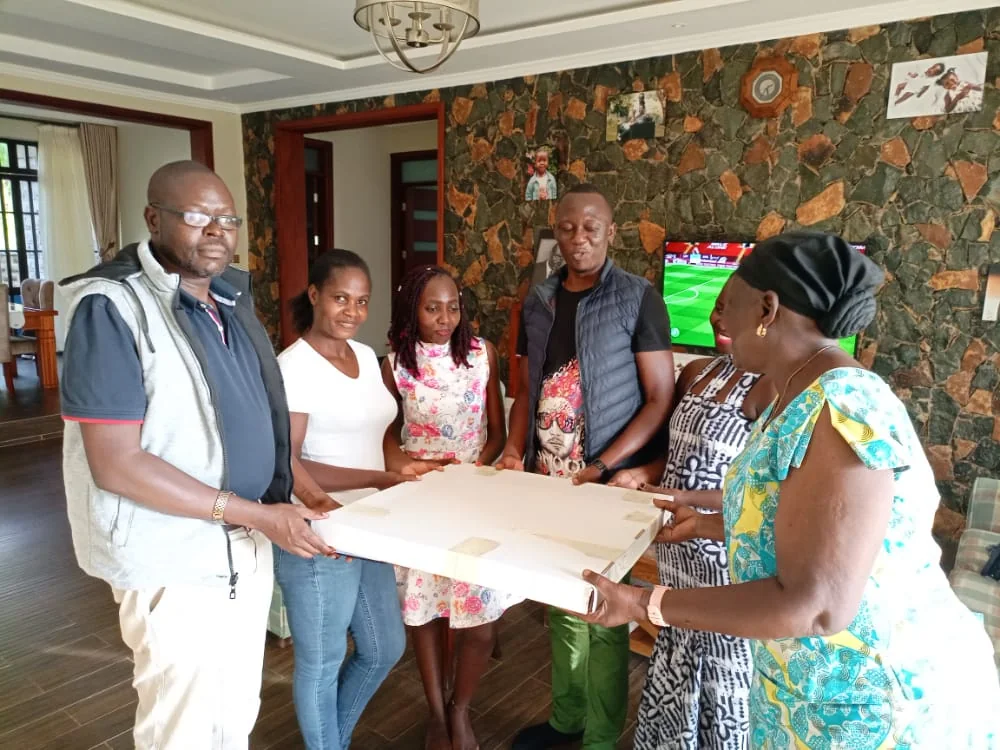
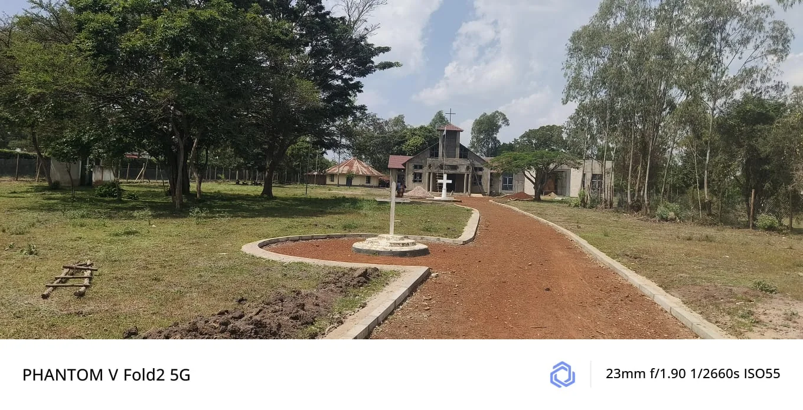
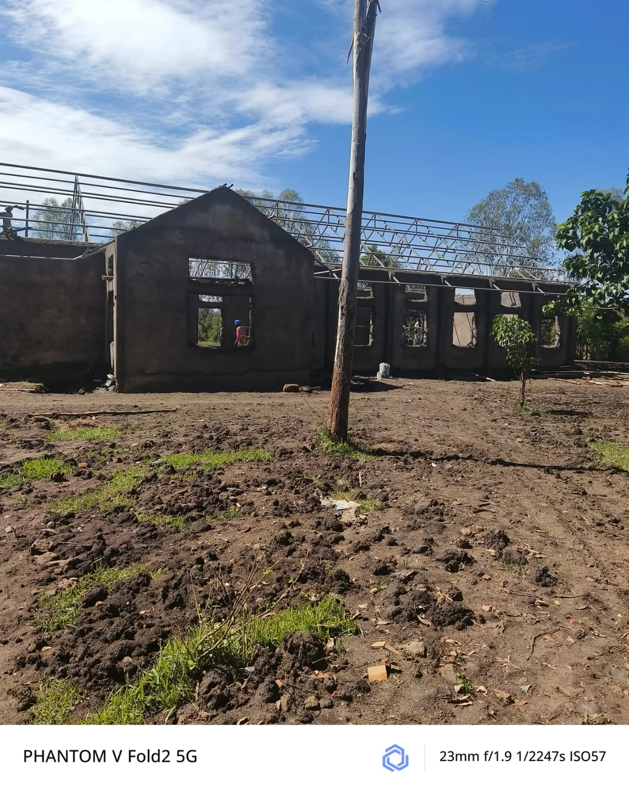
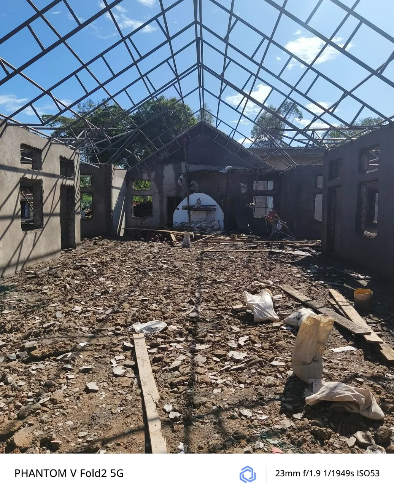

Faith in action
Serving people.
Restoring hope.
The Willis Ondiek Foundation brings compassion, dignity and practical support into the heart of community life.
Explore our work ↓
Who we are
The Willis Ondiek Foundation is a community development initiative founded by Rev. Father Willis Ondiek, a finance professional and philanthropist committed to improving the lives of vulnerable people and communities.
Established in 2015, the Foundation advances social, economic and civic development with a focus on education, empowerment, social support and faith-based community transformation.
“Charity should not end with giving. It should create opportunity.”
How we serve
Education
Through personal fundraising and community support, Rev. Father Willis Ondiek has helped sponsor children from less fortunate backgrounds so they can remain in school and pursue a better future.

Empowerment
Through his patronage of Gladycare Children’s Home in Kosele, Rev. Father Willis has supported agribusiness initiatives that encourage productive participation, stronger food security and self-reliance.
Social support
The Foundation’s vision includes psychosocial support and compassionate community platforms for persons with disabilities and other vulnerable members of society.

Faith in action
Rev. Father Willis Ondiek believes that faith must be expressed through service to humanity.
His vision is to establish a church and community platform that provides spiritual nourishment alongside psychosocial support, compassion and dignity for persons with disabilities and other vulnerable members of society.
The church and community platform is presented as a vision for the future, not as a completed project.
What guides us
To build empowered, self-reliant and dignified communities where every person—regardless of their circumstances—has an opportunity to thrive.
To use education, economic empowerment, social support and faith-based initiatives to transform lives and donate to sustainable community development.
To equip individuals and communities with the knowledge, resources and confidence to build better lives.

Community partnership
At Gladycare Children’s Home, support for agribusiness reflects the Foundation’s wider belief: assistance should strengthen the ability of people and communities to participate, produce and shape their own future.
This visit reflects a practical approach: listen, understand the setting and support pathways toward participation and self-reliance.
Programmes in action
These photographs document real moments of service. They show how nourishment, education, environmental care and faith-led community work come together around human dignity.
A shared meal is more than a plate of food: it is a moment of welcome, nourishment and community care.
Tree planting encourages practical stewardship and leaves a living legacy for the next generation.
Hygiene support helps girls participate in school with confidence, consistency and pride.
Gatherings of faithful people create space for encouragement, shared purpose and compassionate action.
Stories in pictures
These photographs reflect a commitment to showing up, listening and standing alongside people in everyday community spaces.



Faith and community platform



A community space taking shape—an expression of the faith-based vision for welcome, care and human dignity.
Connect with the Foundation
Contact the Foundation about programmes, partnerships and community support.